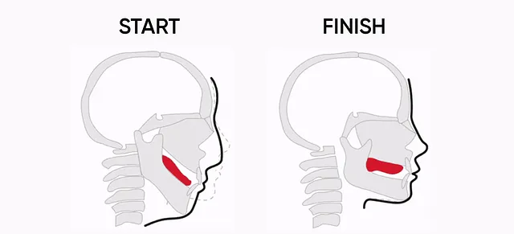

Chad Face | 2022
Press the picture!
What is Chad Face?
Chad Face, or some call "GigaChad Face" is a meme with a man mewing, making the face with expressions emphasizes on the jawline. This face is also related to the Internet slang of sigma man and went viral on TikTok on 2020.
